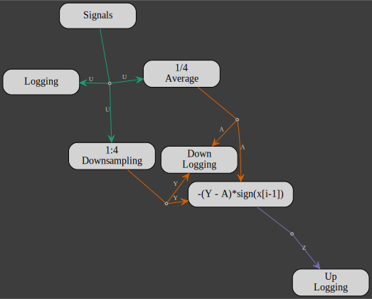
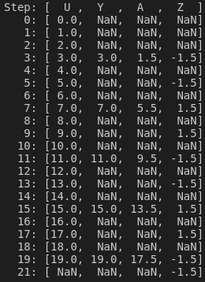

Multirate System
A multirate system mixes signals sampled at different rates.
The flowchart below is a depiction of such a system implemented with gmt_dos-actors where the sample rates of the inputs and outputs (IO) are color coded according to the following table:
| green | orange | purple |
|---|---|---|
| 1 | 1/4 | 1/2 |

The purple IO and orange IO are, respectively, 1/2 and 1/4 the sampling rate of the green IO as show in the outputs record:

Any actor with different inputs (NI) and outputs (NO) sampling rates implements a rate transition.
NI and NO are given as ratios with respect to the highest sampling rate, e.g. for the green IO: NI=NO=1 , for the orange IO: NI=NO=4 and for the purple IO: NI=NO=2.
If NO>NI, the outputs are downsampled, meaning that there is a set of outputs only every NO/NI samples.
If NI>NO, the outputs are upsampled with a zero-order hold, meaning that the outputs are repeated for NI/NO samples.
In any case, downsampling and upsampling,
the Updatemethod of the actor's client is always invoked at the input rate.
The gmt_dos-actors implementation of the multirate system above starts by setting the downsampling and upsampling rates:
const UPRATE: usize = 2;
const DOWNRATE: usize = 4;The input signal is a ramp (a * i + b) starting a 0 with unitary step increments:
let mut signal: Initiator<_> = Signals::new(1, 20)
.channel(0, Signal::Ramp { a: 1f64, b: 0f64 })
.into();A rate transition can be imposed with the Sampler client.
Here the input signal (NI=1) is downsampled according to NO=DOWNRATE
let mut downsampler: Actor<_, 1, DOWNRATE> = (
Sampler::default(),
format!(
r"1:{}
Downsampling",
DOWNRATE
),
)
.into();Downsampling is also the results of the Average client which averages the input over NO/NI samples:
let mut averager: Actor<_, 1, DOWNRATE> = (
Average::new(1),
format!(
"1/{}
Average",
DOWNRATE
),
)
.into();The downsampled and averaged signals, both with the same sampling rate (DOWNRATE), are recombined with the SignedDiff client which computes the difference between both signals and alternates the output sign.
By setting the output rates to NO=UPRATE, an upsampling rate transition will occur:
let mut diff: Actor<SignedDiff, DOWNRATE, UPRATE> =
(SignedDiff::new(), "-(Y - A)*sign(x[i-1])").into();In the next step, we define 3 loggers, one for each sampling rate:
- 1
let logging = Logging::<f64>::new(1).into_arcx();
let mut logger = Terminator::<_>::new(logging.clone());DOWNRATE
let down_logging = Logging::<f64>::new(2).into_arcx();
let mut down_logger = Terminator::<_, DOWNRATE>::new(down_logging.clone()).name(
"Down
Logging",
);UPRATE
let up_logging = Logging::<f64>::new(1).into_arcx();
let mut up_logger = Terminator::<_, UPRATE>::new(up_logging.clone()).name(
"Up
Logging",
);Then it's a matter of defining inputs and outputs:
#[derive(UID)]
enum U {}
#[derive(UID, Clone)]
enum Y {}
#[derive(UID)]
enum A {}
#[derive(UID)]
enum Z {}
building the network:
signal
.add_output()
.multiplex(3)
.build::<U>()
.into_input(&mut logger)
.into_input(&mut downsampler)
.into_input(&mut averager)?;
downsampler
.add_output()
.multiplex(2)
.build::<Y>()
.into_input(&mut diff)
.into_input(&mut down_logger)?;
averager
.add_output()
.multiplex(2)
.build::<A>()
.into_input(&mut diff)
.into_input(&mut down_logger)?;
diff.add_output().build::<Z>().into_input(&mut up_logger)?;
and running the model:
model!(
signal,
downsampler,
diff,
down_logger,
logger,
up_logger,
averager
)
.name("multirate-model")
.flowchart()
.check()?
.run()
.await?;Finally, the logged ouputs are synchronized by post-proccessing the saved data while remembering that if the sampling rate of the ramp signal is 1 and its time step is i, then the time step of the downsampled and upsampled signals are derived from DOWNRATE * (i + 1) - 1 and UPRATE * i + DOWNRATE - 1, respectively.
let mut data: HashMap<usize, Vec<f64>> = HashMap::new();
(*logging.lock().await)
.chunks()
.enumerate()
.for_each(|(i, x)| data.entry(i).or_insert(vec![f64::NAN; 4])[0] = x[0]);
(*down_logging.lock().await)
.chunks()
.enumerate()
.for_each(|(i, x)| {
data.entry(DOWNRATE * (i + 1) - 1)
.or_insert(vec![f64::NAN; 4])[1..3]
.iter_mut()
.zip(x)
.for_each(|(v, x)| *v = *x);
});
(*up_logging.lock().await)
.chunks()
.enumerate()
.for_each(|(i, x)| {
data.entry(UPRATE * i + DOWNRATE - 1)
.or_insert(vec![f64::NAN; 4])[3] = x[0]
});
// Printing the time table
let mut sorted_data: Vec<_> = data.iter().collect();
sorted_data.sort_by_key(|data| data.0);
println!("Step: [ U , Y , A , Z ]");
sorted_data
.iter()
.for_each(|(k, v)| println!("{:4}: {:4.1?}", k, v));Implementation of the SignedDiff client:
pub struct SignedDiff {
left: Data<Y>,
right: Data<A>,
delta: Option<Vec<f64>>,
}
impl SignedDiff {
pub fn new() -> Self {
Self {
left: Data::new(vec![]),
right: Data::new(vec![]),
delta: None,
}
}
}
impl Update for SignedDiff {
fn update(&mut self) {
self.left
.iter()
.zip(self.right.iter())
.map(|(l, r)| l - r)
.zip(self.delta.get_or_insert(vec![0f64; (**self.left).len()]))
.for_each(|(d, delta)| *delta = -d * delta.signum());
}
}
impl Read<A> for SignedDiff {
fn read(&mut self, data: Data<A>) {
self.right = data.clone();
}
}
impl Read<Y> for SignedDiff {
fn read(&mut self, data: Data<Y>) {
self.left = data.clone();
}
}
impl Write<Z> for SignedDiff {
fn write(&mut self) -> Option<Data<Z>> {
self.delta.as_ref().map(|delta| Data::new(delta.clone()))
}
}